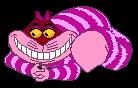

[Alice to Cat] `Would you tell me, please, which way I ought to go from here?'
`That depends a good deal on where you want to get to,' said the Cat.
`I don't much care where--' said Alice.
`Then it doesn't matter which way you go,' said the Cat.
`--so long as I get SOMEWHERE,' Alice added as an explanation.
`Oh, you're sure to do that,' said the Cat, `if you only walk long enough.'
* * * * * *

this time [the Cat] vanished quite slowly, beginning with the end of the tail,
and ending with the grin, which remained some time after the rest of it had gone.
Lewis Carroll, Alice´s Adventures in Wonderland